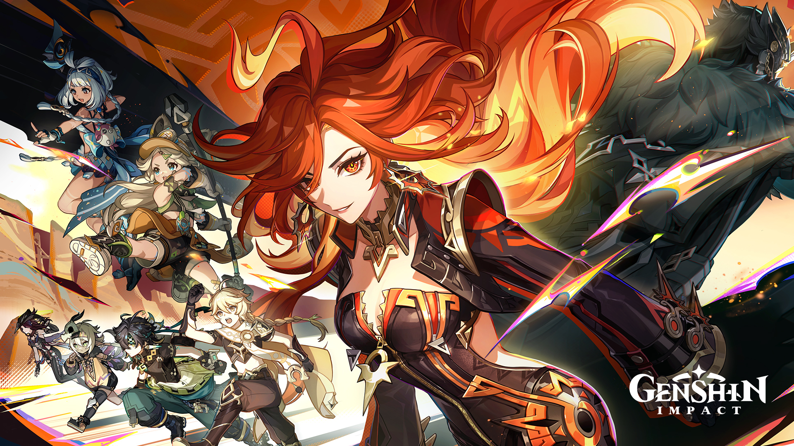
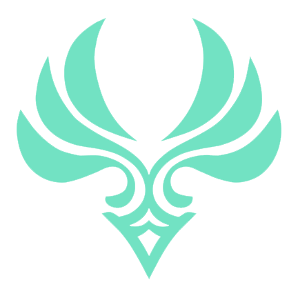
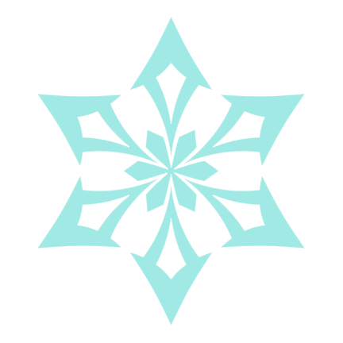
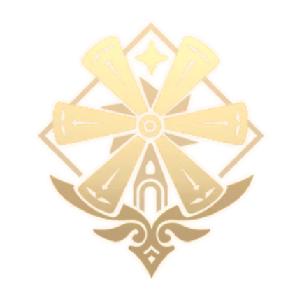
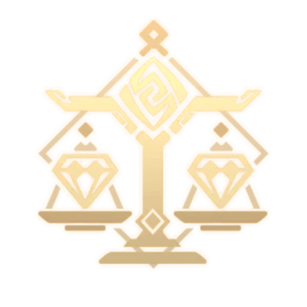
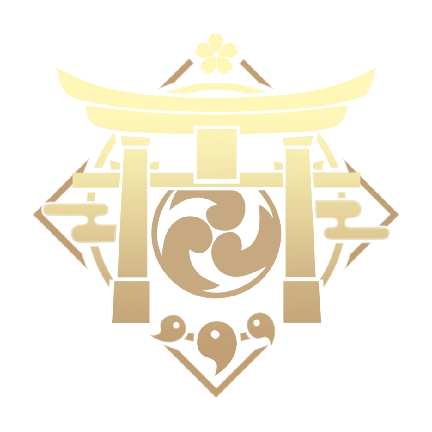
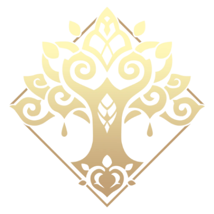
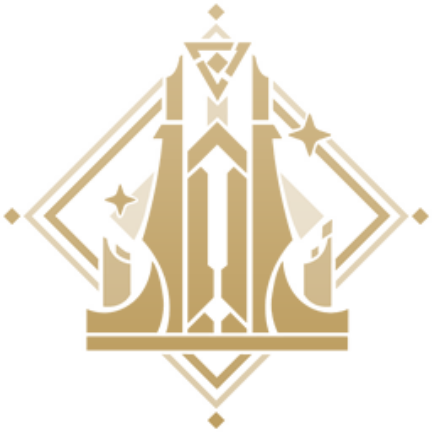
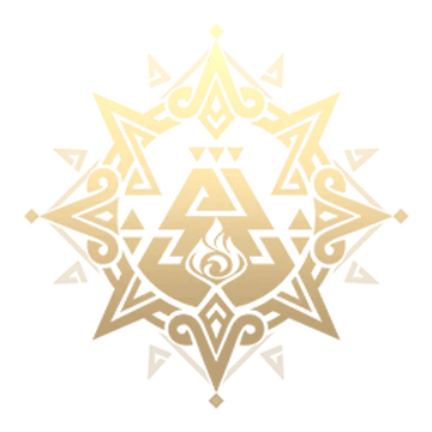
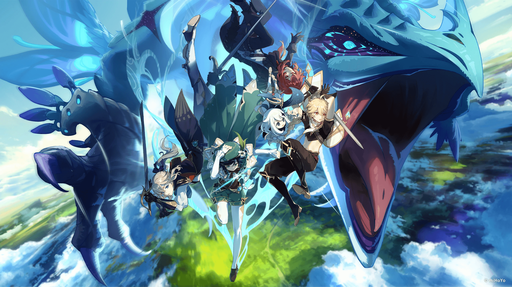

Personajes

Bienvenido al archivo central de los habitantes de Teyvat. En el vasto mundo de Genshin Impact, los personajes no son solo guerreros; son los portadores de la voluntad de los dioses y el motor de una historia que se escribe a través de siete naciones. Esta plataforma es tu guía definitiva para conocer a los aliados que te acompañarán en tu viaje desde las brisas de Mondstadt hasta los confines gélidos de Snezhnaya.
Cada individuo en Teyvat es único, definido por la Visión que le otorga el control sobre uno de los siete elementos (Anemo, Geo, Electro, Dendro, Hydro, Pyro o Cryo). Prepara tu equipo, gestiona tus recursos y descubre quién será tu próximo aliado en la búsqueda de la verdad sobre este mundo.
- Elemento
- Pyro
- Hydro

Anemo- Electro

Cryo- Geo
- Dendro
- Rol
 Main DPS
Main DPS Sub DPS
Sub DPS Buffer
Buffer Shielder
Shielder Healer
Healer Support
Support
- Nación

Mondstadt
Liyue
Inazuma
Sumeru
Fontaine
Natlan- Nod-Krai
- Rareza
- 4 estrellas
- 5 estrellas
- El "Pity" y el 50/50: Para asegurar un personaje de 5 estrellas necesitas entre 150 y 160 deseos. El primer 5 estrellas tiene un 50% de probabilidad de ser el del banner; si fallas, el siguiente es garantizado.
- Captura de Resplandor: Es una mecánica añadida para mitigar la mala suerte. Si pierdes varios 50/50 seguidos, el juego aumenta tus probabilidades de ganar el siguiente de forma automática.
- La Regla del Nivel 80/90: Subir un personaje del nivel 80 al 90 consume casi la misma cantidad de recursos que subirlo del 1 al 80.
- Solo sube al 90 a personajes que escalen con Vida (HP), Defensa o que dependan de Reacciones Elementales (Dendro/Anemo), ya que ellos sí aprovechan ese último empujón.
- No farmees artefactos antes de Rango de Aventura (AR) 45: Antes de ese nivel, los dominios no garantizan artefactos legendarios (dorados). Gastar resina antes es, matemáticamente, un error.
- Resina Concentrada: Si no tienes tiempo de jugar un día, conviértela en el banco de alquimia. Te permite gastar el doble de resina en la mitad de tiempo al día siguiente.
- El Relicario: No uses artefactos de 5 estrellas malos para subir de nivel a otros. Úsalos en el Relicario de la mesa de alquimia para transformarlos en piezas de sets útiles (como Verde Esmeralda o Gladiador).
- Personajes de 4 estrellas en la Tienda: Cada mes rotan personajes en las "Gangas de Paimon". Es la forma más segura de conseguir constelaciones clave como la C1 de Bennett o la C4 de Xiangling sin depender de la suerte.
- Nombres Demoníacos: Todos los Arcontes tienen nombres basados en demonios de la Clavícula de Salomón: Barbatos (Venti), Morax (Zhongli), Baal/Beelzebul (Raiden), Buer (Nahida) y Focalors (Furina). Incluso Paimon comparte esta nomenclatura.
- Katherine es un Robot: Si te fijas bien en su cuello, tiene una cerradura, y en sus líneas de voz a veces dice "Error" o "Reiniciando". Es una marioneta biónica creada en Snezhnaya.
- Guoba es un Dios: El tierno osito de Xiangling es en realidad el antiguo Dios de los Fogones de Liyue, que perdió su tamaño y memoria tras sacrificar su poder para salvar la tierra.
- Edades de los Adeptus: Personajes como Ganyu o Xiao tienen más de 2,000 y 3,000 años respectivamente, habiendo luchado en la Guerra de los Arcontes mucho antes de que Mondstadt fuera como la conocemos.
- Prioriza Soportes: Un main DPS puede pasar de moda, pero los soportes como Kazuha, Nahida o Furina siguen siendo los mejores del juego años después de su salida.
- Cuidado con los Banners de Armas: Son una "trampa" para jugadores con pocos recursos. Solo tira en ellos si tienes al menos 200 deseos y te sirven las dos armas promocionales.
- Teatro Imaginario: Este nuevo modo de juego requiere que tengas una variedad amplia de personajes nivelados (no solo 4 muy fuertes). Es mejor tener 15 personajes al nivel 70 que solo 4 al nivel 90.
¡Tips!
